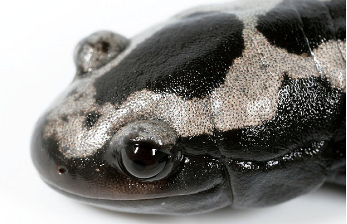
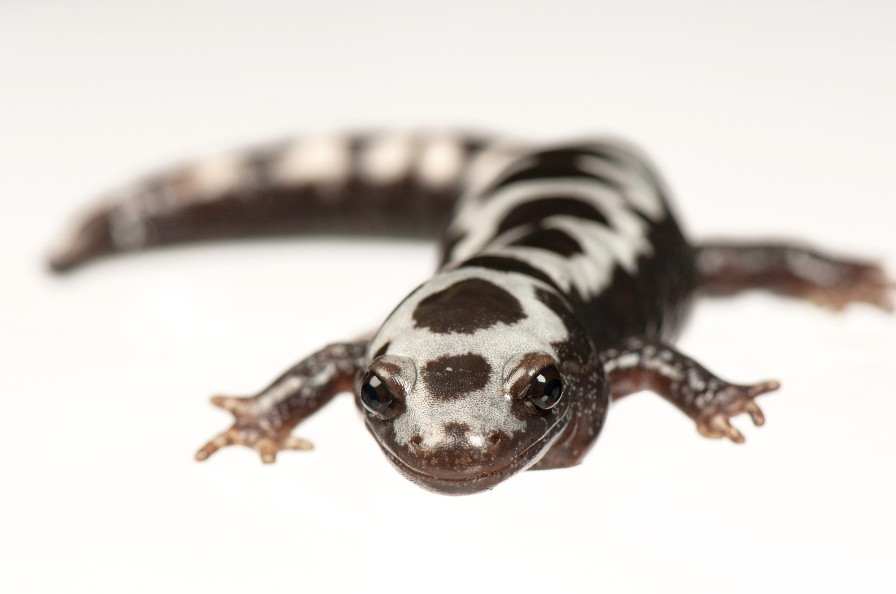
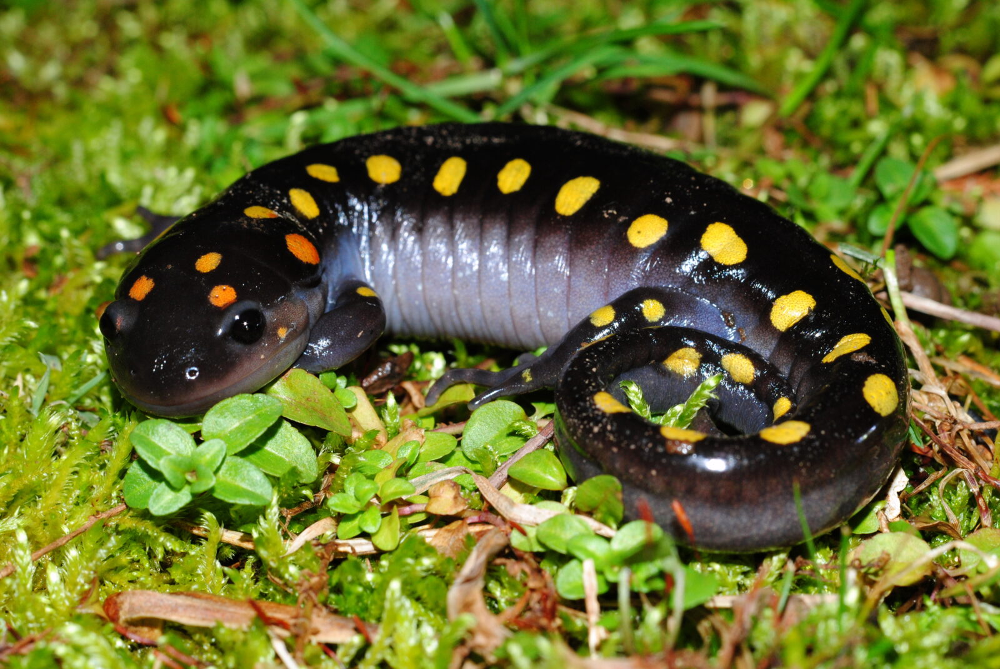
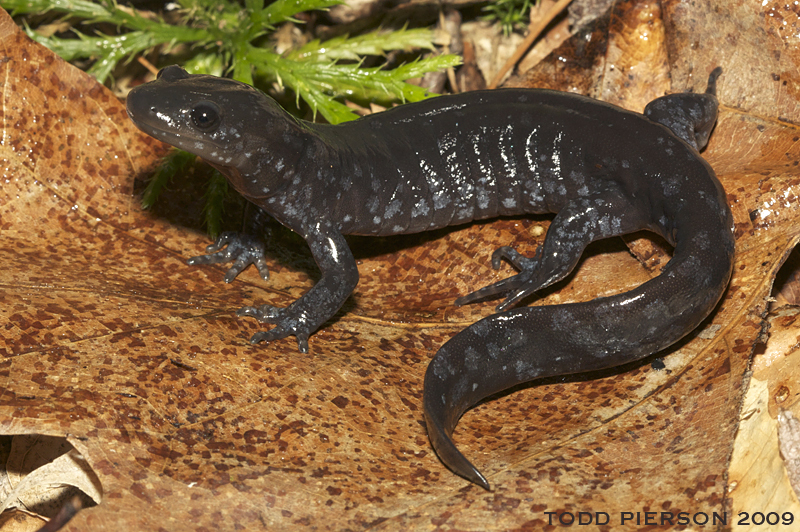
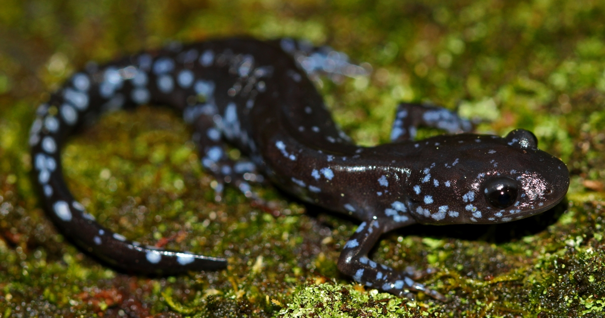

Salamanders may seem unimportant but they are vital for our environmenet! Take a trip through this webpage to learn more about this native northern salamander species!
| Spotted Salamnder | Jeffersons Salamander | Blue Spotted Salamnder |
|---|---|---|
 |
 |
 |